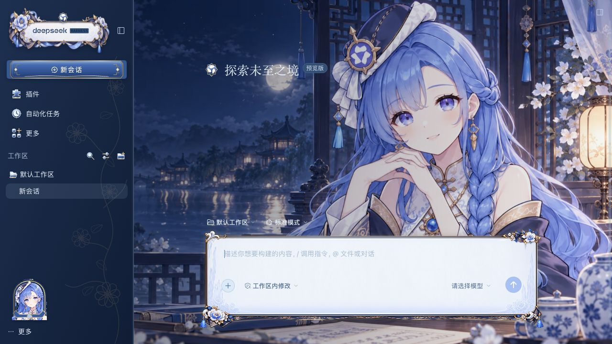

<!doctype html><html lang="zh-CN"><meta charset="utf-8"><meta name="viewport" content="width=device-width,initial-scale=1"><title>千问娘 · 青花锦绣装饰升级对照</title><style>*{box-sizing:border-box}body{margin:0;background:#101b30;color:#e6eefb;font:13px/1.65 -apple-system,"PingFang SC",sans-serif}main{max-width:1180px;margin:auto;padding:24px}header{display:flex;gap:20px;align-items:center;margin-bottom:20px}h1{font-size:21px;font-weight:500;margin:0}header p{font-size:12px;color:#9cb5d0;margin:3px 0}a{color:#e3c995;text-decoration:none}header a{margin-left:auto;white-space:nowrap}.grid{display:grid;grid-template-columns:1fr 1fr;gap:22px}.panel{padding:15px 18px 20px;background:linear-gradient(140deg,#263d5a,#172943);border:1px solid #d4b9824d;border-radius:14px}.panel h2{font-size:15px;font-weight:500;color:#d8c295;margin:0 0 12px}.label{font-size:10px;color:#9fb5ce;letter-spacing:1px;margin:12px 0 5px}svg{display:block;width:100%;background:#101c31;border-radius:9px}.brand{height:180px}.input{height:auto;aspect-ratio:750/235}.note{font-size:11px;color:#a4b9ce;margin:15px 2px}.full{margin-top:25px}.full img{width:100%;border:1px solid #cfb58455;border-radius:10px}.full summary{padding:10px 2px;cursor:pointer;color:#d8c295}@media(max-width:700px){main{padding:17px 12px}header{display:block}h1{font-size:17px}header p{font-size:10px}header a{display:inline-block;margin-top:7px;font-size:11px}.grid{gap:9px}.panel{padding:10px 8px 13px;border-radius:10px}.panel h2{font-size:12px}.brand{height:auto;aspect-ratio:280/180}.note{font-size:10px}}</style><main><header><div><h1>千问娘 · 青花锦绣</h1><p>装饰升级对照 · 瓷釉牡丹、锦缎金络与宝石垂珠</p></div><a href="index.html">打开交互预览 →</a></header><div class="grid"><article class="panel"><h2>0.2.1 · 原版</h2><p class="label">品牌区</p><svg class="brand" viewBox="0 0 280 180"><image href="showcase/before-0.2.1.jpg" width="1280" height="720"/></svg><p class="label">输入区</p><svg class="input" viewBox="410 475 750 235"><image href="showcase/before-0.2.1.jpg" width="1280" height="720"/></svg></article><article class="panel"><h2>0.3.0 · 装饰升级</h2><p class="label">品牌区</p><svg class="brand" viewBox="0 0 280 180"><image href="showcase/after-0.3.0.jpg" width="1280" height="720"/></svg><p class="label">输入区</p><svg class="input" viewBox="410 475 750 235"><image href="showcase/after-0.3.0.jpg" width="1280" height="720"/></svg></article></div><p class="note">两侧均取自隔离 DSH 实际界面。新版将装饰放在框体边缘，输入区保留干净的瓷白底色。</p><details class="full"><summary>展开新版完整界面</summary></details></main></html>
<style>.brand{width:280px;max-width:100%;height:180px;margin:auto}@media(max-width:700px){.brand{height:auto}}</style>
